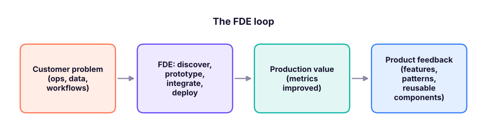
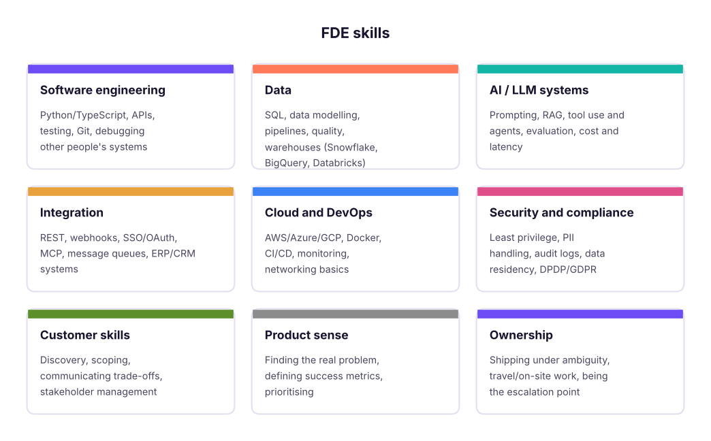

Forward Deployed Engineer (FDE) Complete Guide: The Role, Skills, AI Deployments, Integrations and Interviews
Understand the Forward Deployed Engineer role made famous by Palantir and now central at AI companies such as OpenAI and Anthropic and at enterprise software firms. Learn what FDEs do, the skills stack (software engineering, data, AI/LLM systems, integrations, cloud, security, customer skills), the deployment lifecycle from discovery to production, how to build and evaluate LLM solutions for customers, integration patterns, a capstone deployment and how to prepare for FDE interviews.
- Explain the FDE role and how it differs from software engineer, solutions engineer and consultant
- Map the skills stack and build a learning plan for it
- Run a customer deployment from discovery to production with clear success metrics
- Build, integrate and evaluate an LLM-based solution with security in mind
- Prepare for FDE interviews with case, coding and customer scenarios
What a Forward Deployed Engineer does
A Forward Deployed Engineer (FDE) is a software engineer who works directly with customers to make a product succeed in their real environment. Instead of building one feature for thousands of users, an FDE builds the integrations, data pipelines, workflows and AI applications that make the platform solve one important customer's problem, and feeds what they learn back into the core product.

| Role | Focus | Writes production code? | Customer-facing? |
|---|---|---|---|
| Software engineer | Core product for many users | Yes | Rarely |
| Forward Deployed Engineer | Deploy and extend the product for specific customers | Yes | Yes, deeply |
| Solutions / sales engineer | Demos, technical sales, proofs of concept | Some | Yes (pre-sale) |
| Consultant | Advice, process, change management | Rarely | Yes |
| Customer success manager | Adoption, renewals, relationship | No | Yes |
The model was popularised by Palantir and is now used widely by AI companies (OpenAI, Anthropic and others hire FDEs or similar "applied AI engineer" roles) and by data and automation platforms deploying into banks, governments, healthcare and manufacturing.
The skills stack

The deployment lifecycle
| Phase | What the FDE does | Output |
|---|---|---|
| 1. Discovery | Interview users, shadow workflows, map systems and data, find the costly problem | Problem statement, current-state map, baseline metrics |
| 2. Scoping | Define the smallest valuable deployment, success metrics, constraints, risks | Statement of work / success plan |
| 3. Access and data | Get credentials, network access, data samples; assess quality and permissions | Data inventory, access checklist |
| 4. Prototype | Build a thin end-to-end slice quickly with real data | Demo the customer can use |
| 5. Productionise | Harden: tests, monitoring, error handling, security review, documentation | Production deployment |
| 6. Adoption | Train users, measure usage, fix friction | Usage and outcome dashboard |
| 7. Feedback | Turn repeated custom work into product features or templates | Product requests, reusable components |
baseline = {"claims processed per analyst per day": 40, "average handling time (min)": 12, "error rate": 0.06}
after = {"claims processed per analyst per day": 65, "average handling time (min)": 7, "error rate": 0.035}
for k in baseline:
change = after[k] / baseline[k] - 1
print(f"{k:38s} {baseline[k]:>6} -> {after[k]:>6} ({change:+.0%})")
analysts, salary_per_day = 25, 2500
saved_days = analysts * (1 - baseline['claims processed per analyst per day'] / after['claims processed per analyst per day'])
print(f"capacity freed ≈ {saved_days:.1f} analyst-days per day ≈ ₹{saved_days * salary_per_day * 22:,.0f} per month")claims processed per analyst per day 40 -> 65 (+62%) average handling time (min) 12 -> 7 (-42%) error rate 0.06 -> 0.035 (-42%) capacity freed ≈ 9.6 analyst-days per day ≈ ₹528,846 per month
FDEs live by metrics like these: they make the value of a deployment concrete for the customer and their own company.
Building LLM solutions for customers
A typical AI deployment: a document-heavy workflow (claims, contracts, KYC, support) turned into an AI-assisted process.
- Ingest: connect to document stores (SharePoint, S3, Drive) and systems of record (via APIs or MCP).
- Extract and classify: LLM with structured JSON output and validation; confidence thresholds.
- Retrieve (RAG): chunk, embed and index policies and past cases; cite sources.
- Act: tools that create records, draft replies or route work, with human approval for consequential steps.
- Evaluate: a labelled test set from the customer's real data; measure accuracy per field, groundedness, latency and cost; regression tests before every change.
- Operate: logging, tracing, PII redaction, access controls, cost dashboards, an on-call runbook.
labels = [("invoice_total", True), ("invoice_total", True), ("gstin", False), ("gstin", True), ("due_date", True), ("due_date", True), ("vendor", True), ("vendor", False)]
from collections import defaultdict
acc = defaultdict(list)
for field, ok in labels: acc[field].append(ok)
for f, v in acc.items(): print(f"{f:14s} accuracy {sum(v) / len(v):.0%} on {len(v)} samples")
print("overall:", f"{sum(ok for _, ok in labels) / len(labels):.0%}", "-> add GSTIN validation rule and retest")invoice_total accuracy 100% on 2 samples gstin accuracy 50% on 2 samples due_date accuracy 100% on 2 samples vendor accuracy 50% on 2 samples overall: 75% -> add GSTIN validation rule and retest
Integration patterns FDEs use
| Pattern | Use |
|---|---|
| REST API + webhooks | Most SaaS and modern internal systems |
| Batch files (SFTP/CSV) | Legacy systems, nightly loads |
| Database replication / CDC | Near-real-time data from operational databases |
| Message queues (Kafka, SQS, Pub/Sub) | Event-driven, decoupled systems |
| iPaaS (MuleSoft, Boomi, n8n, Workato) | Enterprise integration with governance |
| SSO (SAML/OIDC) and SCIM | Login and user provisioning |
| MCP servers | Giving AI assistants and agents governed access to customer tools |
Working with customers
- Discovery questions: "Walk me through the last time this went wrong." "What happens if this is wrong?" "Who signs off?" "What does success look like in 90 days, in numbers?"
- Communicate trade-offs in business terms (time, risk, cost), write short decision docs, and send weekly status: done, next, risks, asks.
- Handle pressure: say no with alternatives, protect scope, escalate early, document every agreement.
- Security reviews are part of the job: data flow diagrams, access lists, retention, model/provider data policies, pen-test findings.
Capstone: deploy an AI support assistant for a bank's credit-card team
- Discovery: top 20 call reasons, systems (CRM, card platform, knowledge base), compliance constraints.
- Scope: an internal agent-assist tool that drafts answers with citations for 5 call reasons; success = 20% lower handling time with no drop in quality scores.
- Build: RAG over policies, read-only tools to fetch card status, structured outputs, PII redaction, approval before any customer message.
- Evaluate: 200 historical cases labelled by quality analysts; accuracy, groundedness and compliance checks.
- Deploy: pilot with 15 agents, dashboard of handling time and quality, weekly feedback loop.
- Product feedback: write up reusable connectors and evaluation templates for the core team.
Interview preparation
| Round | What to practise |
|---|---|
| Coding | Practical Python/SQL: parse messy data, call an API, build a small service; clean, tested code |
| System design | Design an integration or AI pipeline for a customer with real constraints (security, legacy systems, scale) |
| Decomposition / case | "A hospital wants to reduce discharge delays. How would you approach it?" Structure, data, quick wins, metrics |
| Customer role-play | Unclear requirements, an angry stakeholder, a failed deployment: listen, clarify, propose |
| Behavioural | Ownership, ambiguity, learning fast, travel and on-site readiness |
Build a portfolio that proves the role: two or three end-to-end projects with a written "customer problem → solution → metrics" story, for example an n8n/Claude document-processing pipeline, a RAG assistant with an evaluation report, and an integration between two real APIs.
Summary
- FDEs are customer-embedded software engineers who deploy and extend a product until it creates measurable value.
- The skills stack combines engineering, data, AI systems, integrations, cloud, security and customer skills.
- Deployments follow discovery → scope → access → prototype → production → adoption → product feedback.
- AI deployments need structured outputs, retrieval, tools with approvals, evaluation on customer data and strong operations.
1. How is an FDE different from a solutions engineer?
2. What should come first in a customer deployment?
3. Which pattern suits a legacy system that exports data nightly?
4. How should an FDE evaluate an AI extraction pipeline?
5. Which is a good discovery question?
6. What turns custom FDE work into company value at scale?
Write a 2-page deployment plan for "AI-assisted invoice processing" at a mid-size Indian manufacturer: problem statement and baseline, scope and success metrics, systems and integration pattern (ERP, email inbox, GST portal data), AI design with validation and human review, evaluation plan, security considerations, pilot plan and the product feedback you would expect to give.
Show solution
A strong plan quantifies the baseline (invoices per day, handling time, error rate), limits scope to the top vendors or formats first, uses email/SFTP ingestion and the ERP API, extracts fields as validated JSON (GSTIN checksum, totals that add up), routes low-confidence invoices to people, evaluates on a few hundred labelled invoices, handles PII and access, pilots with one team for 4 weeks, and proposes reusable extraction templates for the product.
Q: Why do you want to be an FDE? Show that you enjoy owning real outcomes, working with customers and building end to end, with a story where you solved a messy real-world problem.
Q: A customer's data is messy and access is delayed. What do you do? Get a representative sample under an NDA or in a secure environment, build a thin slice with synthetic or masked data, document blockers with owners and dates, and escalate early with the business impact.
Q: How do you decide whether to build custom or wait for the product? Weigh customer value and urgency, how many other customers need it, maintenance cost, and whether it can be built as a reusable component; agree with the product team.
Q: Design an AI assistant for a support team with strict compliance. Read-only tools first, RAG with citations, PII redaction, human approval for outgoing messages, audit logs, evaluation on labelled cases, data residency and provider data policies, and a staged rollout.
Q: How do you show the value of a deployment? Agree baseline and target metrics upfront, instrument usage and outcomes, report weekly, and translate improvements into money, time or risk reduced.